one class any build
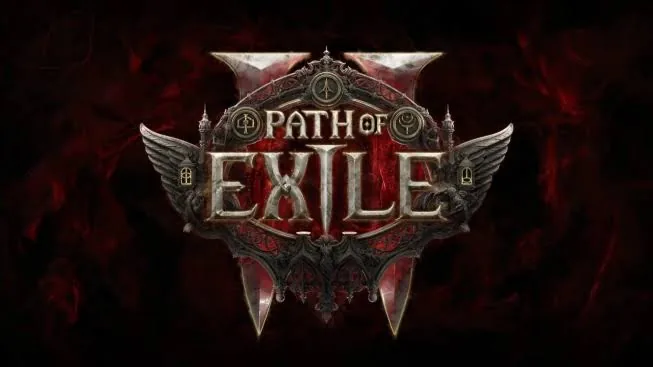
Path of Exile 2 · Grinding Gear Games · the Gemling Legionnaire · patch 0.5.5
The Gemling Legionnaire is a Mercenary, a crossbow class, yet two of the strongest builds people play on it come from other classes' toolkits: a Huntress-style spear Twister and a Sorceress-style Spark caster. This page breaks down how one ascendancy does both.
- 1 ascendancy
- 4 gem notables
- 2 borrowed builds
- Mercenary base
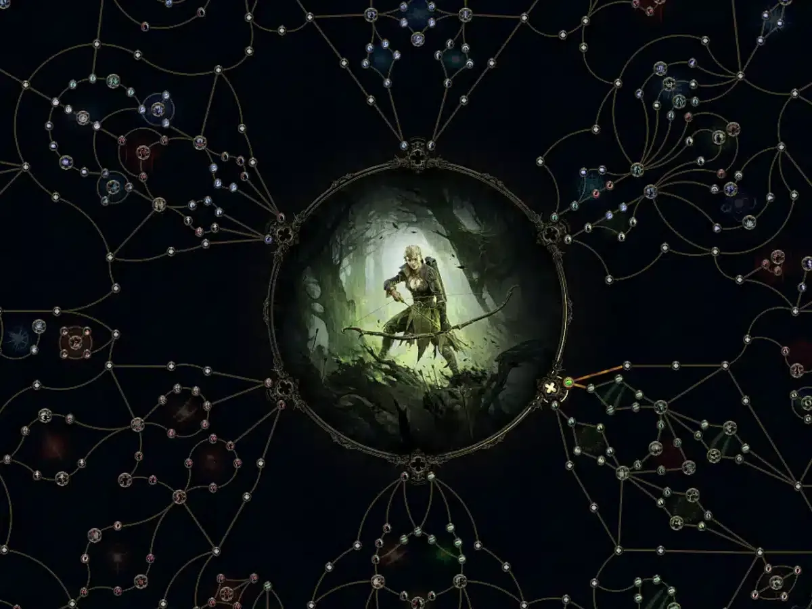
Written from my own builds: more than 900 hours in Path of Exile 2.
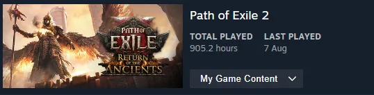
Patch note. Both builds are from patch 0.5.5 (the "Forbidden Rites" league, autumn 2026), from the two guides credited at the bottom. Path of Exile 2 is in early access, so nodes and numbers move between patches.
01Why classes usually box you in
In Path of Exile 2, skills are gems you choose, and support gems socketed into each skill change how it behaves. Every class shares one passive tree. In theory any class can play any skill. In practice two things pull you back to your class's own skills:
- Where you start on the tree. Each class starts in its own corner, near the passives that suit its skills. Reaching another corner costs a lot of points.
- Attribute requirements. Skills need Strength, Dexterity or Intelligence, and your corner of the tree gives you mostly one or two of them.
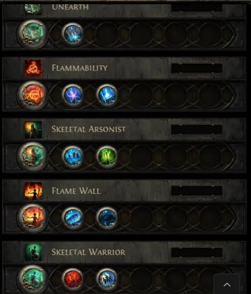
02The Gemling Legionnaire
The Gemling is an ascendancy (a specialisation) of the Mercenary. Most ascendancies make you better at one fantasy. The Gemling makes you better at gems, whatever they are. Both builds take the same four notables:
| Notable | What it does | Why it travels to any build |
|---|---|---|
| Advanced Thaumaturgy | Dual-quality scaling: extra gem quality pays out on every gem's quality bonus. The Twister guide calls it the build's most powerful point. | Quality gives each gem its own bonus, so the same notable powers a spear combo and a spell setup alike. |
| Gem Studded | Balance your red, green and blue support gems to unlock three buffs: enemies deal no extra critical damage, skills cost 30% less, and you're slowed 40% less while using skills. | It rewards how you build, not what you build. Any setup with balanced colours gets it. |
| Implanted Gems | Extra levels to skills of an attribute (Intelligence skills for Spark). | Borrowed skills keep pace with the class that normally owns them. |
| Essence of Virtue | The defensive point. The Twister guide takes it first. | Defence that doesn't depend on the build's damage type. |
The cross-class trick: both builds use a unique jewel, Split Personality, which lets the Mercenary start its tree from another class's corner. The Spark build starts from the Sorceress's corner and the Twister build from the Shadow's. The ascendancy makes the gems stronger; the jewel moves the start point. Together they let a Mercenary play like another class.
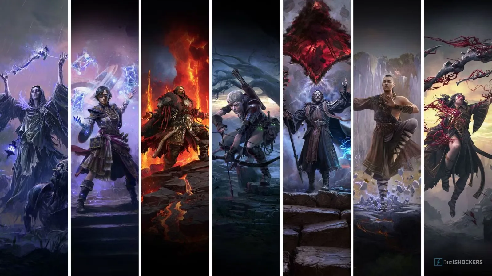
03Build 1: Twister Gemling
Twister Gemling
Spear attacks · Huntress-style kit · guide by snoobae85 (Mobalytics), patch 0.5.5
Twister sends out whirling tornado projectiles. The guide runs from campaign start to late endgame in ten variants, built around gem quality scaling through Advanced Thaumaturgy. The result is multi-screen freezing clear and very high damage in arena content like Ritual.
- The tech
- Weapon swap. Set one holds a fast spear and speed passives for Whirling Slash. Set two holds the damage setup: Twister, Ice-Tipped Arrows and Berserk. The swap is also where the build's mobility comes from.
- Twister's supports
- Rakiata's Flow, Vorana's Siege, Projectile Acceleration III, Salvo, Execute III.
- Late gear
- Headhunter, Rite of Passage, a Voices sapphire, a crafted spear and Morior Invictus. The full setup needs 169+ Spirit.
- Gemling points
- In order: Essence of Virtue (defence), Advanced Thaumaturgy (the big one), Implanted Gems (a small damage boost), then Gem Studded. Of Gem Studded's three buffs, the 30% cost cut matters most; the Wind Dancer gem helps balance the colours.
- Defence
- Evasion and Energy Shield. A top-end setup reaches about 20,000 evasion and 5,000 Energy Shield.
- Trade-offs
- Huge clear and arena damage, but a multi-button rotation, heavy gear dependence, poor visual clarity, and colour-balancing gems across two weapon sets is fiddly.
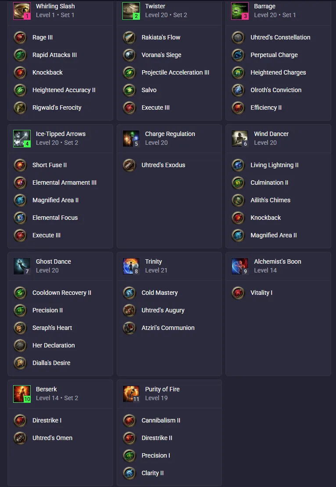
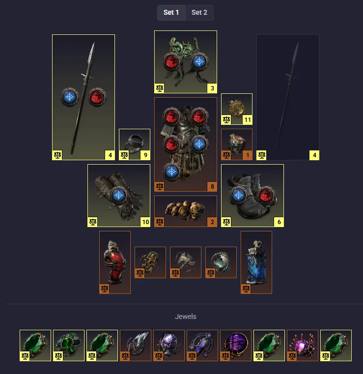
04Build 2: Spark Gemling
Spark Gemling
Lightning spells · Sorceress-style kit · guide by animeprincess (Mobalytics), patch 0.5 / 0.5.5
Spark fires bouncing lightning projectiles. On this Gemling it's a mostly one-button mapper: you cast Spark while moving, and two other spells fire by themselves off its hits. Mana costs stay low, it moves fast while casting, and Spark Sorceress gear carries straight over.
- The engine
- Spark's critical hits trigger Arc through Cast on Critical. Its elemental ailments trigger Comet (alongside Living Bomb) through Cast on Elemental Ailment. You press one button; three spells go off.
- The multiplier
- The unique Adonia's Ego grants Pinnacle of Power: 17% more damage per Power Charge consumed, 153% more at nine. The catch is that Ego lowers your elemental resistances while you hold charges, so you generate them on weapon set two and consume them straight away.
- Spark's supports
- Pinpoint Critical, Efficiency II, Rakiata's Flow, Vilenta's Propulsion, Mobility.
- Gemling points
- Gem Studded is why it feels smooth: 40% less slow while casting, plus Mobility, means you barely slow down. Implanted Gems adds levels to Spark, Arc and Comet (all Intelligence skills). Advanced Thaumaturgy's extra quality improves nearly everything else.
- The cross-class key
- A Split Personality jewel (Sorceress) is mandatory: the Mercenary paths from the Sorceress's start. You can even level a Spark Sorceress first and move the gear over.
- Defence
- A large Energy Shield pool and near-permanent freeze. Pinnacle of Power lasts two to five minutes once it's up.
- Trade-offs
- Very fast, very strong, mostly one button. But the Adonia's Ego rotation takes practice, and the full showcase gear is extremely expensive. The author says the functional core can run on about 20 divines, and offers a 100-divine budget version.
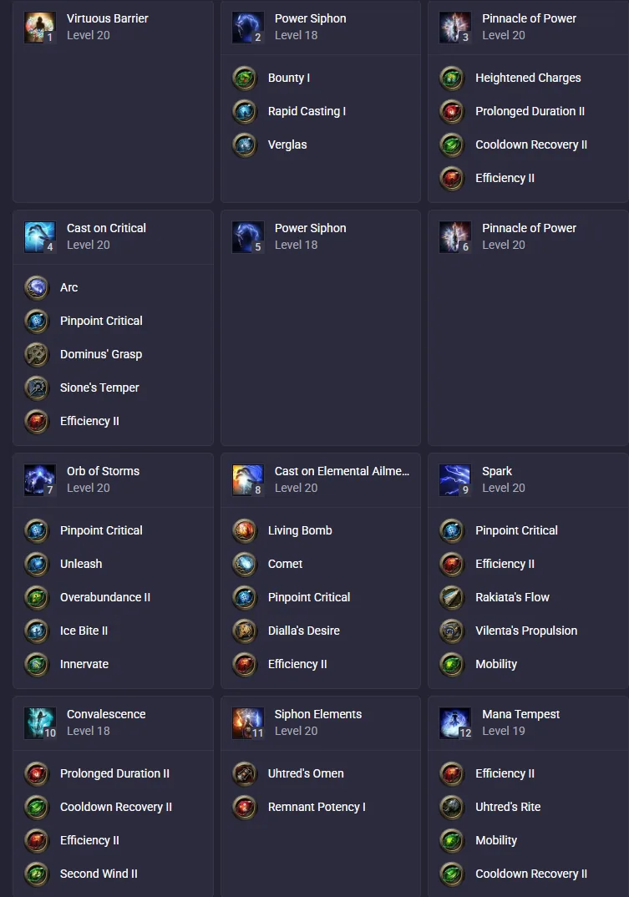
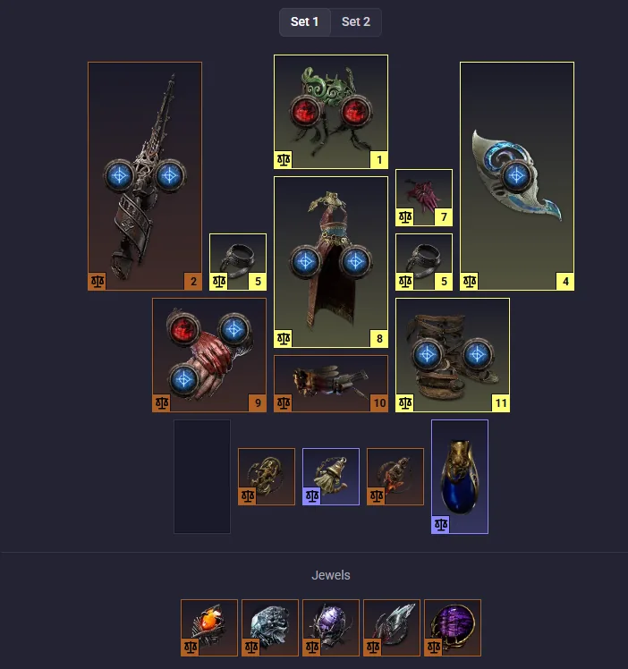
05Side by side
| Twister Gemling | Spark Gemling | |
|---|---|---|
| Feels like | A Huntress spear build | A Sorceress spell build |
| Tree starts from | Shadow (Split Personality) | Sorceress (Split Personality) |
| Damage | Spear attack projectiles, made elemental | Lightning spells plus triggered Arc and Comet |
| Buttons | A multi-skill rotation over two weapon sets | Mostly one button, plus the Ego charge rotation |
| Main lever | Gem quality and the weapon swap | Triggers, duration and Pinnacle of Power |
| Key Gemling point | Advanced Thaumaturgy | Gem Studded |
| Defence | Evasion and Energy Shield | Energy Shield and freeze |
The point: the same Mercenary ascendancy, with the same four notables, leans on a different notable for each build. Twister leans on quality, Spark on the colour buffs. That's what versatile means here: the ascendancy doesn't pick a fantasy, it amplifies whichever one you bring.
06Why it works for the player
- Your build isn't locked to your character. A Mercenary can become a caster without starting over, and existing Sorceress gear has a new home.
- It rewards knowing the systems. Gem colours, quality, weapon sets, triggers. The Gemling is only as strong as your understanding of them, so knowledge is the power curve.
- The cost of freedom is real. Both guides list the same traps: unbalanced gem colours, skills on the wrong weapon set, buying luxury items before the core works. Most players follow a guide to get there.
07What I'd steal and what I'd change
Steal
A specialisation that boosts a system instead of one fantasy, so it multiplies content that already exists. Gem Studded is the cleverest piece: a reward for how you assemble a build, not for what it does.
Change
Readability. Colour balancing across two weapon sets is done with mental arithmetic and filler gems. I'd show the red/green/blue count, and which buffs are active, right in the gem screen.
08Where it shows up in my games
In TERMINUS, the six Units all draw from one upgrade pool of 21 modules: different ways to stand, not bigger toolboxes. A Gemling-style Unit would have a passive that boosts the modules themselves, so the same pool plays differently on it.
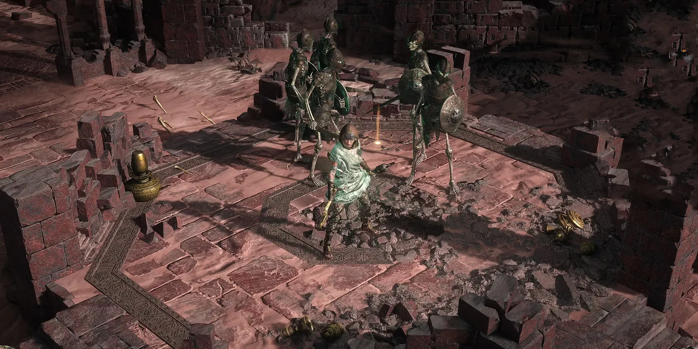
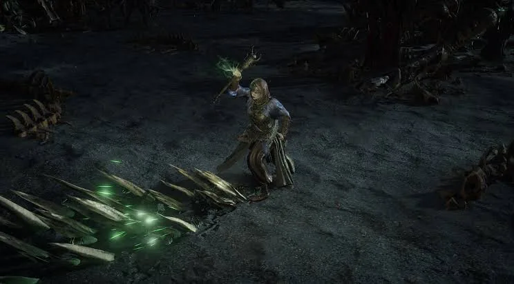
Written from 900+ hours of play. Builds: Twister Gemling Legionnaire by snoobae85 and Gemling Spark by animeprincess, both on Mobalytics, patch 0.5.5; the gem and gear screenshots come from those guides. Path of Exile 2 is in early access and changes between patches. Path of Exile and its images are Grinding Gear Games'; the class line-up image is from DualShockers. This is a design analysis, not affiliated with Grinding Gear Games.